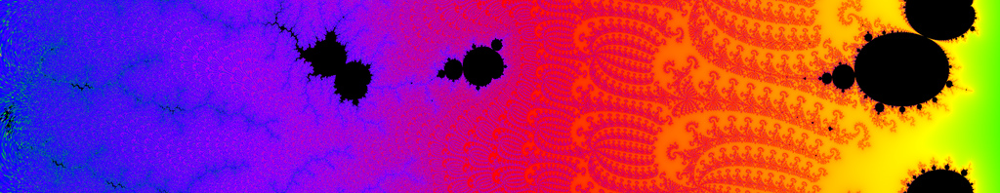
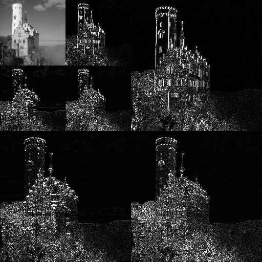

Please wait, while our marmots are preparing the hot chocolate…
## {image-full top-left darkened /black-bg /no-status /first-slide title-slide fancy-slide bot}
-
-
-
## TITLE {#plan plan overview /with-ujm}
- The Curse of Dimensionality
- Ockham's Razor
- Notions of Simplicity
- Conclusion
# The Curse of Dimensionality
## The Curse of Dimensionality {image-full top-left darkened /black-bg /no-status fancy-slide bot tunedel}
- High-dimensionality iscan be a mess.
## What is this Curse Anyway? {libyli}
- Some definition:
- *Various phenomena that arise
when analyzing and organizing data
in high-dimensional spaces.* {no}
- Term coined by Richard E. Bellman
- 1920 − 1984
- dynamic programming
- differential equations
- shortest path // Bellman-Ford algorithm
- What is (not) the cause?
- not an intrinsic property of the data
- depends on the representation
- depends on how data is analyzed
- {notes notslide}
- we'll see some example
- and that it impacts most a lot of things
## Combinatorial Explosion {libyli}
- Suppose
- you have $d$ entities
- each can be in $2$ states
- Then
- there are $2^d$ combinations to consider/test/evaluate
- Happens when considering
- all possible subsets of a set ($2^d$)
- all permutations of a list ($d!$)
- all affectations of entities to labels ($k^d$, with $k$ labels)
@svg: curse-of-dim/subsets.svg 700px 150px
## Regular Space Coverage
- Analogous to combinatorial explosion, in continuous spaces
- Happens when considering {next}
- histograms
- density estimation
- anomaly detection
- ...
- @anim: #dim1 |#d1points |#dim2 |#d2x |#d2y |#d2grid |#d3x |#d3y |#d3z |#d3cube
- @anim: .next
@svg: curse-of-dim/covering.svg 800px 300px
## In Modeling and Learning {libyli}
@svg: curse-of-dim/overfitting.svg 300px 300px {floatright}
- The world is complicated // or any object of interest
- state with a huge number of variables (dimensions)
- possibly noisy observations
- e.g. a 1M-pixel image has 3 million dimensions
- Learning would need observations for each state
- it would require too many examples
- need for an “interpolation” procedure, to avoid overfitting
- @anim: .hasSVG | #points | #linear | #piecewise | #ok
- Hughes phenomenon, 1968 paper (which is wrong, it seems)
- *given a (small) number of training samples, additional feature measurements
may reduce the performance of a statistical classifier{captain}* {no}
## A Focus on Distances/Volumes
- Considering a $d$ dimensional space
- About volumes {slide libyli}
- volume of the cube: $C_d(r) = (2 r)^d$
- volume of a sphere with radius $r$: $S_d(r) = \frac{\pi^{d/2}}{\Gamma(\frac{d}{2} + 1)}r^d$
($\Gamma$ is the continuous generalization of the factorial){captain}
- ratio: $\frac{S_d(r)}{C_d(r)} \rightarrow 0$ (linked to space coverage) {captain}
- @anim: #dim2 | #dim1 |%dur:1000|#d1mask|%dur: |#dim3 |#dcorners
@svg: curse-of-dim/volumes.svg 800px 200px
## A Focus on Distances/Volumes (cont'd) {libyli}
@svg: curse-of-dim/volumes.svg 800px 200px
@svg: curse-of-dim/average-dist.svg 200px 200px {floatright}
- About distances
- average (euclidean) distance between two random points?
- everything becomes almost **as** “far”
- Happens when considering
- radial distributions (multivariate normal, etc){captain}
- k-nearest neighbors (hubiness problem)
- other distance-based algorithms
## The Curse of Dimensionality {image-full top-left darkened /black-bg /no-status fancy-slide bot}
- Many things get degenerated with high dimensions
- Problem of: approach + data representation
- *We have to hope that there is no curse*
# @copy: #plan
## Ockham's Razor {image-full top-left darkened /black-bg /no-status fancy-slide top}
- Shave unnecessary assumptions.
## Ockham's Razor {libyli}
- Term from 1852, in reference to Ockham (XIVth)
- *lex parsimoniae*, law of parsimony
- *Prefer the simplest hypothesis that fits the data.*// Among competing hypotheses, the one with the fewest assumptions should be selected
- Formulations by Ockham, but also earlier and later
- More a concept than a rule
- simplicity
- parsimony
- elegance
- shortness of explanation
- shortness of program (Kolmogorov complexity)
- falsifiability (sciencific method) // simple -> more cases -> easy to falsify
- According to Jürgen Schmidhuber, *the appropriate mathematical theory of Occam's razor already exists, namely, Solomonoff's theory of optimal inductive inference.{slide}*
# Notions of Simplicity // a tour, in learning mostly
## Simplicity of Data: subspaces {libyli}
- Data might be high-dimensional, but we have hope
- that there is a organization or regularity in the high-dimensionality
- that we can guess it
- or, that we can learn/find it
- Approaches: dimensionality reduction, manifold learning
- PCA, kPCA, \*PCA, SOM, Isomap, GPLVM, LLE, NMF, … // (26 algorithms listed on wikipedia (Nonlinear dimensionality reduction), but not only that list, also (feature learning))
- @anim: #manipoints |#manifold | -#manifold,#manipoints |#facepoints |#facespaces | -#facepoints,#facespaces |#manistuff
@svg: simplicity/manifolds-etc.svg 800px 300px
## Simplicity of Data: compressibility


- Idea
- data can be high dimensional but compressible
- i.e., there exist a compact representation
- Program that generates the data
(Kolmogorov complexity) {kolmo}
- Sparse representations {sparse}
- wavelets (jpeg), fourier transform
- sparse coding, representation learning
- Minimum description length {mdl}
- size of the “code” + size of the encoded data
- @anim: .kolmo | .sparse | .mdl
## Simplicity of Models: information criteria {libyli}
- Used to select a model
- Penalizes by the number $k$ of *free parameters*
- AIC (Aikake Information Criterion) // http://www4.ncsu.edu/~shu3/Presentation/AIC.pdf
- penalizes the Negative-Log-Likelihood by $k$
- BIC (Bayesian IC)
- penalizes the NLL by $k \log(n)$ (for $n$ observations)
- BPIC (Bayesian Predictive IC)
- DIC (Deviance IC) // compute easily from the MCMC simulation (use Expect instead of MLE)
- FIC (Focused IC)
- Hannan-Quinn IC
- TIC (Takeuchi IC)
- Sparsity of the parameter vector ($l0$ norm)
- penalizes the number of non-zero parameters
## Take-home Message {image-fit top-left darkened /black-bg /no-status /fancy-slide}
## Thank You!
Questions? {image-fit bottom-left darkened /black-bg /no-status /fancy-slide}
# That's It!
Questions? {deck-status-fake-end}
# Attributions
## jared {image-full bottom-left darkened /black-bg /no-status}
## jsbanks42 {image-full bottom-left darkened /black-bg /no-status}
## tech no logic {image-full bottom-left darkened /black-bg /no-status}
## Fixcinater {image-full bottom-left darkened /black-bg /no-status}
## Arenamontanus {image-fit bottom-left darkened /black-bg /no-status}
## Wikipedia {image-fit bottom-left darkened /black-bg /no-status}
## someToast {image-fit bottom-left darkened /black-bg /no-status}
/ − will be replaced by the author − will be replaced by the title